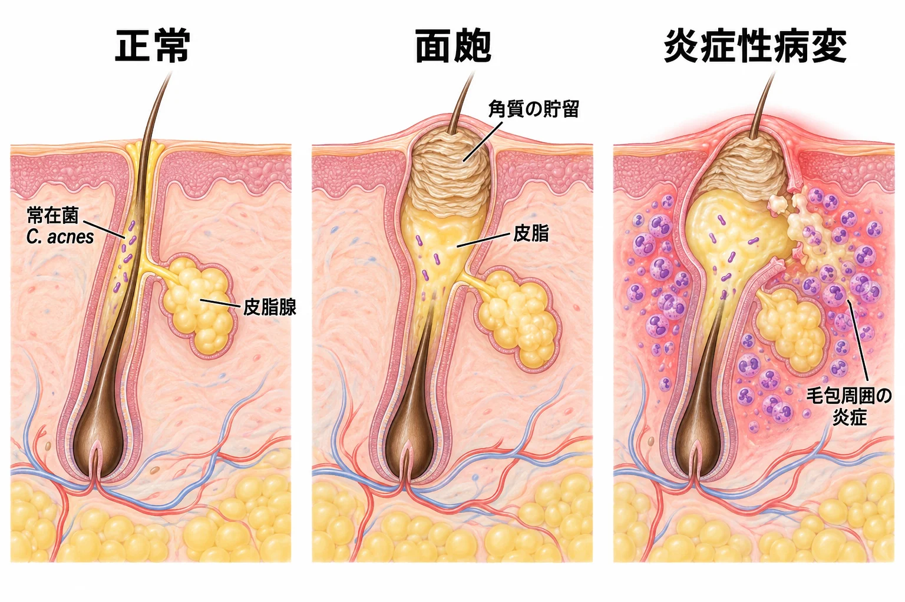

美容皮膚科 ／ 疾患・病態を細胞から理解する
尋常性痤瘡皮脂・毛包の角化・常在菌・炎症
公開 2026-10-18
痤瘡（にきび）は、思春期に多く見られる皮膚疾患です。日本では90％以上の人が経験するとされています（日本皮膚科学会ガイドライン2023）。顔ににきびができることは、外見への悩みだけでなく、自信や対人関係にも影響し、心理的な負担になることがあります（Tasoulaら, 2012）。
炎症が治まった後も、皮膚の凹みなどの瘢痕が残ることがあり、その影響は生涯に及ぶ場合もあります（NICE：痤瘡瘢痕の管理）。今あるにきびを減らすとともに、新しい病変と瘢痕を防ぐことも、治療の大切な目的です。
病変の中心は、毛包と皮脂腺がつながる毛包脂腺系です。皮脂を作る細胞、毛包の上皮、常在菌、免疫細胞の反応が重なって病変を作ります。その仕組みを知ることで、薬がどこに作用し、炎症が引いた後もなぜ治療を続けるのかが理解できます。
この章の一言
痤瘡では、毛包の角化が乱れて角質がたまり、毛穴が詰まって皮脂が排出されにくくなります。菌に対する細胞の反応などによる炎症も、病変に関わります。 炎症を抑える治療と、新しい面皰を作らせない治療の両方に役割があります。
1 皮脂・角化・菌・炎症が、同じ毛包で関わる
痤瘡の病変では、毛包脂腺系の複数の働きが変わっています。毛包に角質と皮脂がたまってできる病変が面皰です。毛包には、アクネ菌（Cutibacterium acnes、C. acnes）などの常在菌が生息しています。
| 関わるもの | 毛包で起こる変化 |
|---|---|
| 皮脂 | 脂腺細胞での産生が増え、脂質の組成や酸化も変わる |
| 毛包の角化 | 毛包内の角質が排出されにくくなり、皮脂とともにたまる |
| 菌の環境 | 常在菌の菌株構成や、毛包内での菌の働きが変わる |
| 炎症 | 毛包上皮・脂腺細胞・免疫細胞が反応し、炎症性物質を作る |
ホルモンや成長因子は皮脂を作る細胞に作用し、毛包内にたまった皮脂と角質は、菌が生息する環境にも影響します。菌や脂質由来の刺激への細胞の反応が、毛包周囲の炎症につながります。一つの原因だけで決まるのではなく、複数の要因が同じ毛包で重なる疾患です（日本皮膚科学会ガイドライン2023）。

2 皮脂の産生と、分泌後に起こる変化
アンドロゲンとIGF-1が、脂腺細胞に作用する
アンドロゲンは脂腺細胞に作用し、皮脂産生を促します。これに加え、インスリン様成長因子1（IGF-1）も脂質合成に関わります。IGF-1は、成長や代謝を調節する成長因子です。
培養したヒト脂腺細胞では、IGF-1が細胞内のPI3K/Aktというシグナル経路を活性化し、脂質合成に関わる遺伝子の発現を調節する転写因子、SREBP-1を増やしました。その結果、脂質の合成が増えました。皮脂の量は、細胞が受け取る情報と、それを受けて働く合成系によって変わります（Smithら, 2008）。
mTORは、成長の情報と物質の合成をつなぐ
mTORは、成長因子や栄養などの情報を受けて、細胞の成長や物質の合成を調節するタンパク質です。ほかのタンパク質と複合体を作って働き、その一つがmTORC1です（→ mTORC1――タンパク質合成を調節する仕組み）。脂腺細胞でも、IGF-1からのシグナルとmTORの経路が、脂質合成を調節する仕組みとして研究されています。
痤瘡のある人の皮膚を調べた研究では、対照よりmTORの発現が高いことが報告されています。この研究で測定したのは発現量です。経路の活性や、発症への関与を確かめるには、さらに検討が必要です（Agamiaら, 2016）。
詳しく読む：脂腺細胞で調べられたmTOR経路
ヒト脂腺細胞株SZ95を用いた実験では、光増感剤と光を組み合わせるALA-PDTによって、mTOR経路の活性を示すリン酸化や、脂質合成に関わるSREBP-1などが低下しました。IGF-1はその作用を弱め、mTORC1を阻害するラパマイシンは作用を強めました。脂腺細胞の増殖・脂質合成にこの経路が関わることを支持する培養実験です（Tuoら, 2017）。
皮脂の成分と、その分解・酸化も角化や炎症に関わる
皮脂は一種類の油ではなく、トリグリセリド、スクアレン、ワックスエステルなどの混合物です。何がどれだけ含まれるかと、分泌後にどう変化するかが、毛包の細胞や菌への作用を左右します。
含まれる脂質の割合が変わる。 痤瘡のある人とない人を比べた小規模な研究では、痤瘡群で皮脂の総量だけでなく、スクアレンの割合も高くなっていました。同じ量の皮脂でも、成分の割合が違えば、酸化されやすい脂質の量や、菌が利用する材料が変わります（Pappasら, 2009）。
菌が皮脂を分解し、遊離脂肪酸が生じる。 C. acnesが作る酵素リパーゼは、トリグリセリドを分解します。脂質から切り離された状態の脂肪酸を、遊離脂肪酸と呼びます。脂肪酸の作用は種類によって異なります。例えば、培養したヒト脂腺細胞にパルミチン酸を加えた実験では、炎症を促すIL-1βの産生・分泌が増えました。脂質自体が、菌とは別に細胞の炎症反応を促すこともあります（パルミチン酸の培養実験, 2021）。
スクアレンが酸化されると、細胞への作用が変わる。 スクアレンには酸化を受けやすい二重結合があり、紫外線などの作用で過酸化物が生じます。培養した角化細胞では、この過酸化物によって細胞増殖が促され、初期には炎症性サイトカインIL-6の産生が増えました（Ottavianiら, 2006）。ウサギの耳に塗布した実験でも、未酸化のスクアレンより面皰を生じやすい結果でした。面皰形成への作用は、動物実験で示されたものです（Chibaら, 2000）。
皮脂の増加は、毛包内にたまる材料を増やします。そこに脂質の組成、菌による分解、酸化が重なると、細胞が受ける刺激も変わります。皮脂の合成と分泌後の変化は皮脂分泌の生化学、脂質の酸化が進む仕組みは酸化ストレスと抗酸化で扱います。
3 角質と皮脂がたまり、面皰になる
皮脂腺で作られた皮脂は、毛包を通って皮膚表面へ出ます。毛包の上部、毛包漏斗部では、上皮細胞が角化し、通常は剥がれて排出されます。痤瘡ではこの角化・剥離が乱れ、角質が毛包内に貯留します。皮脂とともにたまった角質が毛包を塞ぎ、毛包が拡張すると面皰になります。
目で見える面皰より小さい初期病変を微小面皰と呼びます。炎症性病変が減っても微小面皰が残っていれば、新しい病変のもとになります（日本皮膚科学会ガイドライン2023）。
炎症は、赤い病変になる前から始まっている
痤瘡患者の、臨床的には正常に見える毛包を調べた研究でも、毛包周囲のT細胞・マクロファージの増加や、炎症性の変化が確認されています。角質が詰まった後に初めて炎症が起こる、という順序だけではありません。 角化の変化と炎症は、早い段階から相互に影響します（Jeremyら, 2003）。
面皰・赤い丘疹・膿疱は、同じ毛包脂腺系に生じる異なる所見です。すべての面皰が膿疱へ進むわけではなく、病変ごとに角質貯留や炎症の程度が異なります。
4 常在菌の構成と、菌への反応が変わる
アクネ菌の旧名はPropionibacterium acnes（P. acnes）、現在の名前はCutibacterium acnes（C. acnes）です。2016年に分類が見直されて属名が変わりました。どちらも同じ菌種を指します（Scholz・Kilian, 2016）。
同じアクネ菌でも、菌株によって性質が違う
一つの菌種の中にも、遺伝的な特徴や性質が異なる菌株があります。痤瘡のある人と健常者の毛包を比較した研究では、C. acnesの相対量に大きな差がなくても、菌株の構成に違いがありました。痤瘡のある人に多い系統も、健常者に多い系統もあります（Fitz-Gibbonら, 2013）。
菌株の違いは、免疫細胞の反応にも表れます。健康な人の血液から取り出した免疫細胞を培養し、菌を加えた実験では、痤瘡と関連する系統は、健常な皮膚と関連する系統よりも、炎症を促すIL-17やIFN-γを多く誘導しました。一方、健常な皮膚と関連する系統では、炎症を抑えるIL-10の産生が多くなりました。菌が作るタンパク質や、引き起こす免疫応答の違いが研究されています（Yuら, 2016）。
菌への反応が、毛包周囲の炎症につながる
毛包内の菌由来成分を、毛包上皮や免疫細胞が認識すると、炎症性サイトカインが作られます。血管から白血球が集まり、毛包周囲に炎症が広がると、赤い丘疹や膿疱が生じます。毛包壁が損傷し、内容物が真皮へ出ると、周囲の炎症と組織損傷がさらに強くなることがあります。
菌の構成に加えて、皮脂の組成や角質の貯留、菌への免疫応答も病変に関わります。治療では菌に作用するだけでなく、面皰形成と炎症にも作用する薬を組み合わせます。
詳しく読む：菌の刺激からIL-1βが作られるまで
NLRP3インフラマソームは、細胞内の危険信号に応答して組み立てられるタンパク質複合体です。活性化すると、酵素カスパーゼ1が、前駆体のIL-1βを働ける形へ切り替えます。IL-1βは炎症を促すサイトカインです。
ヒト単球を用いた実験では、C. acnesによるIL-1βの分泌にNLRP3が関与しました。菌の刺激を受けた細胞が炎症性物質を放出する、具体的な経路の一つです（Qinら, 2014）。
補足：アクネ菌を利用するスキンケアの研究
選んだC. acnesの菌株を皮膚に塗布する研究もあります。2025年の報告では、XYCM42という菌株の生菌と、その培養で得られる成分を使ったスキンケアが調べられました。8週間の使用後、診察で評価した20人では面皰や炎症性病変が減りました。ただし、洗浄料・保湿剤・日焼け止めなども組み合わせて使い、比較する対照群はありません。菌株そのものの効果を確かめるには、対照を設けた検証が必要です（Alqamら, 2025）。
5 ストレス・腸内環境・皮膚への刺激も調べられている
ストレスと、皮膚側の応答
試験期とそれ以外の時期を比較した研究では、ストレスが強い時期ほど痤瘡が悪化する関連が認められました。一方、別の学生を対象とした研究では、ストレスと重症度の関連があっても、皮脂量には時期による有意な差がありませんでした。ストレスによる悪化は、皮脂量の増加だけでは説明できません（Chiuら, 2003・Yosipovitchら, 2007）。
皮膚にも、ストレスに関連する分子へ応答する仕組みがあります。培養した脂腺細胞は、副腎皮質刺激ホルモン放出ホルモン（CRH）とその受容体を持ち、CRHを加えると脂質合成が増えました。心理的なストレスが患者の痤瘡を悪化させる経路を、どこまでこの実験で説明できるかは未確定です（Zouboulisら, 2002）。
腸内環境との関係は、どこまで分かっているのか
腸内に生息する細菌の集まりを腸内細菌叢と呼びます。痤瘡のある人と対照の便を比較した研究では、腸内細菌の多様性や構成に違いが報告されています（Dengら, 2018・Yanら, 2018）。
腸内細菌とその代謝物が全身の免疫や代謝に作用することから、皮膚の炎症との関係も研究されています。ただし、上の研究は便の菌構成を比較したもので、腸の変化がどの経路で毛包の炎症を起こすかまで確かめたものではありません。痤瘡への寄与や治療の標的としての有効性は、まだ検討が続いています。
摩擦・圧迫・蒸れによる局所の悪化
皮膚が繰り返しこすれる、圧迫される、覆われて蒸れるといった条件で、局所の痤瘡が悪化することがあります。衣服や装具などの刺激に伴うものは、機械性痤瘡（acne mechanica）と呼ばれます。痤瘡のある皮膚を粘着材で覆った実験では、微小面皰の破綻に由来する新しい炎症性病変が生じました（Mills・Kligman, 1975）。
強くこする洗顔や、病変を触る・潰すことは、皮膚や病変への刺激になります。毛包の角化異常と、外から加わる摩擦は別の要因として考えます。病変を繰り返し掻いたり触って傷つけたりすることは、瘢痕のリスクにも関わります（NICEの推奨）。
洗浄・化粧品と、治療を続けられる皮膚の状態
洗浄は毛包の外へ出た皮脂や汚れを取り除きます。微小面皰は毛包内にあるため、洗顔に加えて、毛包の角化に作用する治療が必要です。洗浄料は刺激の少ないものを選び、こすりすぎを避けます。化粧品や日焼け止めも、面皰を生じにくい製品を選び、メイクは落とします（NICEの推奨）。
外用薬で乾燥や刺激が生じると、治療を続けにくくなります。保湿を組み合わせ、使っている製品と洗浄・外用の方法を確認することも、治療を支えます。
6 治療は、角化・菌・炎症・皮脂産生に働きかける
薬ごとに主な作用点が異なるため、面皰が多いのか、丘疹・膿疱が続くのか、瘢痕を残すような病変があるのかに応じて組み合わせます。外用薬だけでなく、内服薬やホルモンに作用する治療もあります。
外用薬：面皰形成と炎症を抑える
| 薬 | 何の薬か | 主な作用点 |
|---|---|---|
| アダパレン | 外用レチノイド | レチノイン酸受容体を介して毛包上皮の角化を調節し、微小面皰・面皰の形成を抑える |
| 過酸化ベンゾイル（BPO） | 酸化作用を持つ外用薬 | C. acnesに抗菌作用を示し、面皰を減らす作用も持つ |
| クリンダマイシンなど | 外用抗菌薬 | 菌に作用し、炎症性病変を減らす |
| アゼライン酸（AZA） | ジカルボン酸の一種 | 抗菌・抗炎症作用と、毛包の角化を整える作用を持ち、面皰と炎症性病変に用いられる |
BPOは、抗菌作用があっても抗菌薬とは異なる薬です。抗菌薬と併用することは、耐性菌の問題を抑えるためにも重要です。抗菌薬は炎症性病変に用い、改善後はアダパレンやBPOなどで面皰形成を抑える維持治療へつなげます（日本皮膚科学会ガイドライン2023）。
アゼライン酸は、海外では痤瘡治療の外用薬として使われています。比較試験では炎症性病変と非炎症性病変の減少が認められました（Cunliffe・Holland, 1989）。医薬品として評価された製剤と、日本で販売される化粧品は区別します。レチノイドが遺伝子発現を変える仕組みはレチノイド外用の生化学で扱います。
アンドロゲンの作用を抑える治療
米国皮膚科学会のガイドラインでは、クラスコテロン、スピロノラクトン、複合経口避妊薬も選択肢として挙げられています（AADガイドライン2024）。
| 薬 | 作用する場所・仕組み | 使用される場面 |
|---|---|---|
| クラスコテロン | 外用のアンドロゲン受容体阻害薬。皮膚でアンドロゲンの作用を抑える | 海外で用いられる外用薬。面皰と炎症性病変を減らす |
| スピロノラクトン | 本来は抗アルドステロン作用を持つ利尿薬。アンドロゲンの作用も抑える | 成人女性の持続する痤瘡などで検討される |
| 複合経口避妊薬（ピル） | エストロゲンとプロゲスチンを含む。卵巣のアンドロゲン産生を抑え、血液中の遊離アンドロゲンを減らす | 女性の痤瘡で、避妊の希望や健康状態も踏まえて検討される |
クラスコテロンの外用試験では、基剤のみと比べて炎症性病変と非炎症性病変が減りました（Hebertら, 2020）。スピロノラクトンも、持続する顔面痤瘡のある成人女性を対象とした試験で改善が認められています（Santerら, 2023）。
ピルに含まれるエストロゲンは、血液中で性ホルモンを結合する性ホルモン結合グロブリン（SHBG）を増やします。アンドロゲンがこのタンパク質に結合すると、細胞に作用できる遊離アンドロゲンが減ります。
ピルに含まれるプロゲスチン（黄体ホルモン成分）は、アンドロゲン受容体への作用が異なります。 例えばレボノルゲストレルはアンドロゲン作用を持ち、ドロスピレノンは抗アンドロゲン作用を持ちます。受容体を用いた細胞実験でも、前者はアンドロゲン受容体を活性化し、後者はその作用を抑えることが示されています（プロゲスチンの受容体作用の比較, 2017）。
ただし、痤瘡への効果は、エストロゲンを含む配合剤全体で評価します。ドロスピレノン配合剤の有効性に加え、ノルゲスチメート配合剤やレボノルゲストレル配合剤にも、プラセボより痤瘡が改善した比較試験があります。デソゲストレル配合剤も、ノルゲスチメート配合剤との比較で総病変数が減りました（ドロスピレノン・ノルゲスチメート・レボノルゲストレル・デソゲストレルとの比較）。
ドロスピレノン配合剤とノルゲスチメート配合剤を比較した試験では、総病変数の減少はドロスピレノン側がやや上回り、炎症性病変の減少は同程度でした。黄体ホルモン成分のアンドロゲン作用は製剤を選ぶ要素の一つですが、痤瘡への効果はそれだけで決まりません。 エストロゲンの種類・量との組み合わせや、血栓症などのリスクも踏まえて選びます（Thorneycroftら, 2004）。
日本ではピルやスピロノラクトンに痤瘡の承認適応はなく、日本皮膚科学会の2023年ガイドラインでは、ピルは他の治療で改善が不十分な成人女性に使用してもよいが推奨しないとされ、スピロノラクトンは推奨されていません（日本皮膚科学会ガイドライン2023）。
抗菌薬とイソトレチノインの内服
ドキシサイクリンなどのテトラサイクリン系抗菌薬は、菌への作用に加え、炎症反応を抑える作用を持ちます。炎症性病変が多い場合などに外用薬と組み合わせ、抗菌薬を長く続けることを治療の基本にはしません。
イソトレチノインは内服レチノイドです。脂腺細胞に作用して皮脂産生を大きく抑え、毛包の角化や炎症にも作用します。海外では、重症の痤瘡や、十分な標準治療でも改善しない場合などに用いられます（NICEの推奨）。
ヒト脂腺細胞を用いた実験と治療前後の皮膚の解析では、イソトレチノインによる脂腺細胞のアポトーシス（細胞死）に、リポカリン2（NGAL）というタンパク質が関わることが示されました。皮脂を作る細胞そのものに作用する、機序の一つです（Nelsonら, 2008）。
日本ではイソトレチノインに痤瘡の承認適応はありません。催奇形性があるため、妊娠に関する厳格な管理が必要です。皮膚・粘膜の乾燥や検査値の変化などにも注意します（PMDA：国内の神経芽腫用製剤の添付文書）。
7 炎症が引いた後に、何が残るのか
| 残る所見 | 主に変化しているもの |
|---|---|
| 炎症後紅斑 | 血管の拡張など、血管由来の変化 |
| 炎症後色素沈着 | メラニンの増加と残存 |
| 萎縮性瘢痕 | 真皮の組織損傷と、その後の修復による構造の変化 |
赤み・色素沈着・凹みは、同じ場所に重なって残ることもあります。それぞれ、血管・メラニン・真皮の構造という異なる変化を見ています。
赤みは、血管の変化が残るために長引く
丘疹や膿疱が落ち着いた部位に残る赤みを、炎症後紅斑（PIE）と呼びます。炎症に伴う血管の拡張などが残り、赤みが長引くことがあります。炎症性病変が軽快しても、血管や周囲の組織が落ち着くまでには時間がかかります。
痤瘡後の赤みを調べた研究では、残る炎症と血管に関わる変化が確認されています。高周波治療後の皮膚を対照群と比較すると、炎症性物質のIL-8や、血管の形成を促すVEGFなどの染色が少なくなっていました。赤い跡の背景には、血管の変化と、残る炎症の両方が関わり得ます（Minら, 2016）。赤みの仕組みは赤みの生化学で扱います。
凹みは、真皮の損傷と修復の結果として残る
毛包周囲の炎症が真皮のコラーゲンなどを傷つけると、その後に修復が進んでも、元の厚みや構造まで回復せず、凹みが残ることがあります。炎症性痤瘡の組織では、コラーゲンなどを分解するマトリックスメタロプロテアーゼ（MMP）の増加と、コラーゲンの分解が確認されています（Kangら, 2005）。
瘢痕ができやすい人とできにくい人の病変を比較した研究では、瘢痕ができやすい群で炎症の収束が遅れました。炎症の強さだけでなく、長引くことも組織損傷と修復に関わります（Hollandら, 2004）。赤みがあるだけで、必ず凹みになるわけではありません。瘢痕ができる仕組みは炎症と創傷治癒、色素沈着は炎症後色素沈着（PIH）で扱います。
赤みの治療と、瘢痕を防ぐための治療
血管レーザーは、血液中のヘモグロビンが光を吸収する性質を利用して血管に作用します。このように、光を吸収して治療の標的となる物質を発色団（クロモフォア）と呼びます。残る赤みに対しては、パルス色素レーザー（PDL）などを用いた改善が報告されています。光が血管に作用する仕組みは血管レーザーで扱います。
赤みを伴う既存の痤瘡瘢痕を対象とした試験では、PDLと非蒸散性フラクショナルレーザーの併用が、フラクショナルレーザー単独より赤みと瘢痕の評価を改善しました。ただし、これは治療4週後の既存瘢痕の改善を調べた研究です。早期に赤みを治療することで、将来の凹みを予防できるかは、別に検証する必要があります（Zhouら, 2024）。
瘢痕を防ぐためには、活動性の痤瘡を治療して新しい炎症性病変を減らすことが大切です。すでに萎縮性瘢痕があり、中等症の顔面痤瘡が続く31人で左右の顔を比較した6か月の試験では、アダパレン0.1％・BPO2.5％配合剤を塗った側の萎縮性瘢痕数はほぼ変わらず、基剤だけを塗った側では約25％増えました。炎症が起きている段階から治療を続けることが、凹みを増やさないためにも役立つという根拠です（Drénoら, 2017）。
この章の到達点
- 皮脂産生、毛包の角化、菌の構成と炎症が重なる多因子の病態を説明できます。
- IGF-1・mTOR、ストレス、摩擦や閉塞が関わる場所と、腸内環境について分かっている範囲を理解します。
- 面皰を抑える治療、炎症性病変の治療、炎症後の変化への治療を区別できます。
中核参考文献
- Jeremy AHT, et al. Inflammatory events are involved in acne lesion initiation. J Invest Dermatol. 2003;121:20–27. PMID 12839559.
- Fitz-Gibbon S, et al. Propionibacterium acnes strain populations in the human skin microbiome associated with acne. J Invest Dermatol. 2013;133:2152–2160. PMID 23337890.
- Qin M, et al. Propionibacterium acnes induces IL-1β secretion via the NLRP3 inflammasome in human monocytes. J Invest Dermatol. 2014;134:381–388. PMID 23884315.
- Smith TM, et al. IGF-1 induces SREBP-1 expression and lipogenesis in SEB-1 sebocytes via activation of the phosphoinositide 3-kinase/Akt pathway. J Invest Dermatol. 2008;128:1286–1293. PMID 17989724.
- Agamia NF, et al. Skin expression of mammalian target of rapamycin and forkhead box transcription factor O1, and serum insulin-like growth factor-1 in patients with acne vulgaris and their relationship with diet. Br J Dermatol. 2016;174:1299–1307. PMID 26799159.
- Tuo J, et al. ALA-PDT suppressing the cell growth and reducing the lipogenesis in human SZ95 sebocytes by mTOR signaling pathway in vitro. Photodiagnosis Photodyn Ther. 2017;18:295–301. PMID 28330814.
- Chiu A, Chon SY, Kimball AB. The response of skin disease to stress: changes in the severity of acne vulgaris as affected by examination stress. Arch Dermatol. 2003;139:897–900. PMID 12873885.
- Yosipovitch G, et al. Study of psychological stress, sebum production and acne vulgaris in adolescents. Acta Derm Venereol. 2007;87:135–139. PMID 17340019.
- Zouboulis CC, et al. Corticotropin-releasing hormone: an autocrine hormone that promotes lipogenesis in human sebocytes. Proc Natl Acad Sci USA. 2002;99:7148–7153. PMID 12011471.
- Mills OH, Kligman AM. Acne mechanica. Arch Dermatol. 1975;111:481–483. DOI: 10.1001/archderm.1975.01630160071007.
- Hebert A, et al. Efficacy and safety of topical clascoterone cream, 1%, for treatment in patients with facial acne: two phase 3 randomized clinical trials. JAMA Dermatol. 2020;156:621–630. PMID 32320027.
- Santer M, et al. Effectiveness of spironolactone for women with acne vulgaris (SAFA) in England and Wales: pragmatic, multicentre, phase 3, double blind, randomised controlled trial. BMJ. 2023;381:e074349. PMID 37192767.
- Koltun W, et al. Efficacy and safety of 3 mg drospirenone/20 mcg ethinylestradiol oral contraceptive administered in 24/4 regimen in the treatment of acne vulgaris: a randomized, double-blind, placebo-controlled trial. Contraception. 2008;77:249–256. PMID 18342647.
- Nelson AM, et al. Neutrophil gelatinase-associated lipocalin mediates 13-cis retinoic acid-induced apoptosis of human sebaceous gland cells. J Clin Invest. 2008;118:1468–1478. PMID 18317594.
- Scholz CFP, Kilian M. The natural history of cutaneous propionibacteria, and reclassification of selected species within the genus Propionibacterium to the proposed novel genera Acidipropionibacterium gen. nov., Cutibacterium gen. nov. and Pseudopropionibacterium gen. nov. Int J Syst Evol Microbiol. 2016;66:4422–4432. PMID 27488827.